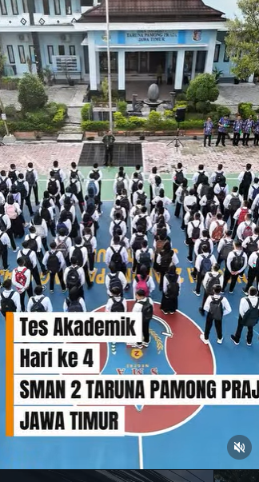
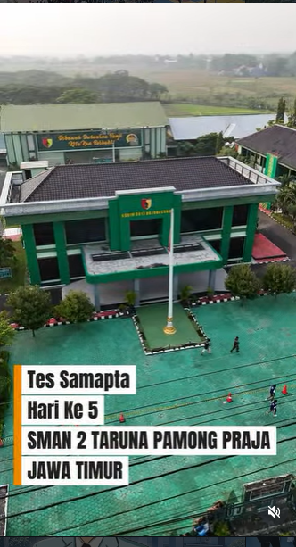
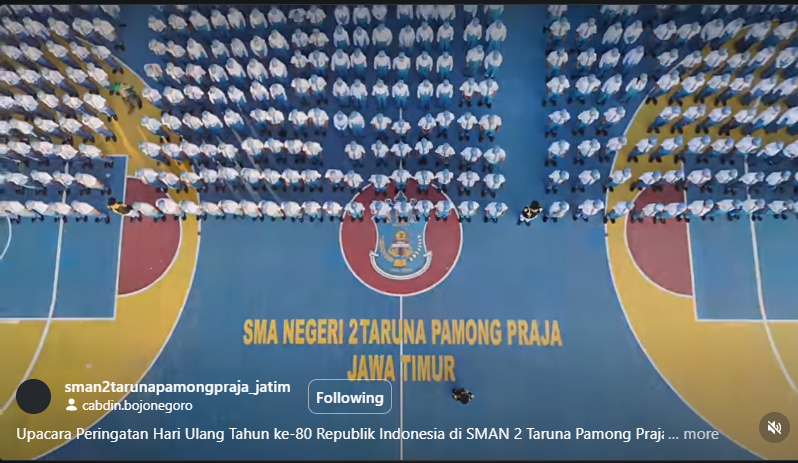
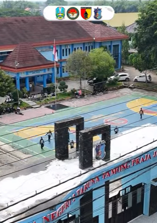

Footage aerial cinematic untuk kebutuhan dokumentasi sekolah. Setiap pengambilan gambar dirancang untuk storytelling visual yang kuat dari sudut yang tidak biasa.Tidak termasuk editing viddeo dan take video non drone



